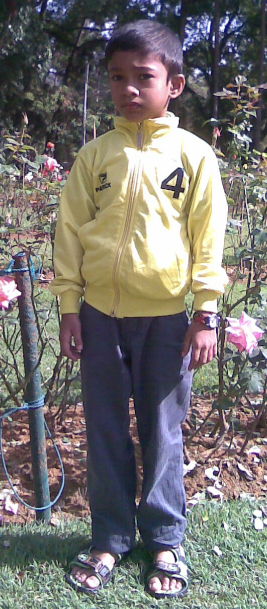

H.M. Sulaimaan Sheriff

- My name is H.M. Sulamaan Sheriff.
- I live in Wellampitiya.
- I'm eleven years old.
- I'm a grade 7 student in D.S. Senanayake College.
- I'm having more friends in my school. They are; Nethum,Ashen,Adeeshe,Chamiru,Chamath,Tharaka.
- I have a one brother. His name is H.M. Usmaan Sheriff.
- My mother name is Munthaj Begam Fakurdeen from Kandy. She started classes and a printing shop.
- My fathers name is Mohomed Hassen sheriff. He is a old boy in my school. Now he is working on MANS LANKA (PVT) LIMITED and Multilac.
Thank You for looking My Life